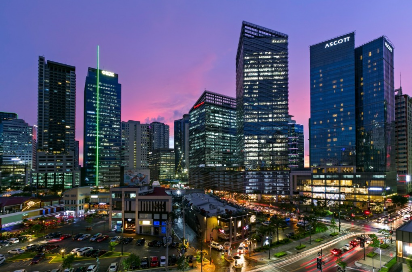

WELCOME TO PHILIPPINES
----INCREDIBLE LANDSCAPES & WATERSCAPES----
DISCOVER THE LANDS
Explore some of the fascinating beauty of the Philippine nature and rock formations that formed thousand years ago
----INCREDIBLE LANDSCAPES & WATERSCAPES----
El Nido is famous for its beautiful beaches, crystal clear waters and stunning limestone cliffs.
EXPLOREBoracay is famous for it's beauiful white sand beaches crystal clear waters and breathtaking sunsets.
EXPLOREFamous landmark in Bicol province found in Albay, known bacause of it's nearly perfect symmetrical cone shape.
EXPLOREKnown to it's magnificent steps carved into the mountains of Ifugao, Philippines, by the ancestors of the indigenous Igorot people.
EXPLOREFamous group of 1,260 to 1,776 cone shapd lime stone mounds located in the Bohol province of the Philippines.
EXPLOREThe world's second largest contiguous coral reef system and the largest in the Philippines, located off the coast of Occidental Mindoro Strait.
EXPLORE-----WE NEED TO PROTECT IT-----

A beautiful and active Volcano located in the province of Batangas, Philippines
EXPLORE
famous for it's stunning, crystal cclear turquoise waters and multi tiered jungle setting on Siquijor Island in the Philippines.
EXPLORE
Famousfor it's modern skyscrapers, clean and pedestrian friendly streets, and vibrant "live, work, play" cosmopolitan environment.
EXPLORE